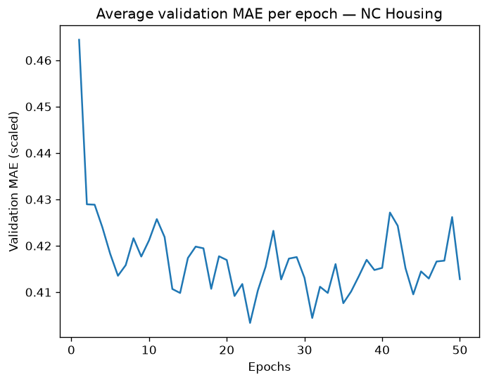
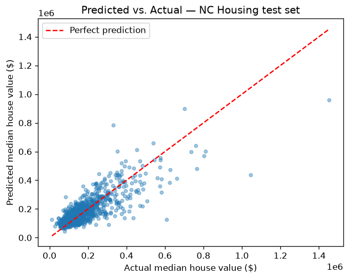
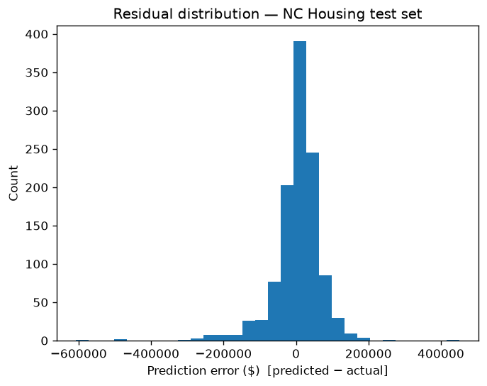
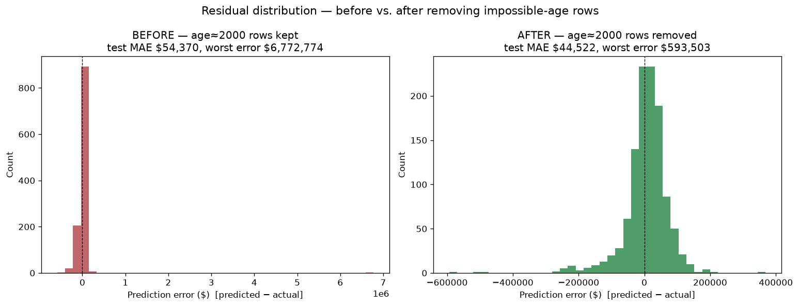

The twist: our headline result is that the obvious fix — build a bigger model — didn't work. Figuring out why is the whole exhibit.
NC_Housing_Prices_2018.csv — ACS 2018 5-year
estimates + TIGER/Line centroids. Loads with one pd.read_csv().flowchart LR A["🌴 California Housing
1990 · ~20,640 rows
8 features"]:::ca B{{"Same shape
Same workflow"}}:::mid C["🌲 NC Housing
2018 · ~5,600 rows
7 features"]:::nc A --> B --> C classDef ca fill:#222220,stroke:#d95926,color:#fff,stroke-width:2px; classDef nc fill:#222220,stroke:#3987e5,color:#fff,stroke-width:2px; classDef mid fill:#161615,stroke:#898781,color:#c3c2b7;
total_rooms is mislabeled — see next panel.| # | The bug | What we did |
|---|---|---|
| 1 | total_rooms = total_bedrooms in every row (wrong ACS table pulled for both) | Kept one column; documented values are really bedroom counts. 7 features, not 8. |
| 2 | 9999 sentinel in median_house_value | Dropped those rows. |
| 3 | A row with housing_median_age == 2018 (a "year built" leaked through) | In-script != 2018 filter. |
| 4 | Two rows with age ≈ 2000 — impossible 2,000-year-old houses | Removed them. This one mattered → Experiment 0. |
The boss fight of this module isn't code — it's deciding what "done" means in advance, so you don't polish forever. We committed to two measurable signals, in writing.
Feed-forward net: 2 hidden layers × 64 ReLU units, one linear output. Keras 3 on the PyTorch backend. Small on purpose — the textbook's Housing shape.
Mean Absolute Error, in dollars. "On average, how many dollars are we off?" Human-legible — you can feel a dollar error.
K-fold cross-validation: rotate which slice is held out, average the results. Honest error, not lucky-split error. A separate test set is the final exam.
flowchart LR
I([Issue]) --> B([Branch]) --> P([PR]) --> R([Review]) --> M([Merge])
M -. next experiment .-> I
classDef s fill:#222220,stroke:#3987e5,color:#fff,stroke-width:1.5px;
class I,B,P,R,M s;



| Metric | Before | After |
|---|---|---|
| Test MAE | $54,370 | $44,522 |
| Worst single error | $6,772,774 | $593,503 |
| Rows | 5,637 | 5,635 |

A science-fair board should say what it isn't. Over-scoping is the #1 way these projects die. We wrote the guardrails on day one and held the line.
flowchart LR N["Do better?"]:::root N --> F["Signal, not size
engineer features · fresh 2020–24 ACS"]:::f N --> L["Fix the flinch
Huber loss · log-transform target"]:::f N --> E["Stop earlier
read turnaround off the MSE curve"]:::f classDef root fill:#222220,stroke:#3987e5,color:#fff,stroke-width:2px; classDef f fill:#161615,stroke:#898781,color:#c3c2b7;
The real lesson wasn't about neural networks. It was that disciplined process is what let us confidently say "bigger won't help."
Without it, five nearly-identical numbers would've looked like failure — instead of a finding.
NC_Housing_Prices_2018.csv (ACS 2018 5-yr + TIGER/Line)run.sh → nc_housing_model_v2.pyoutputs/ under a shared timestampsitreps/CHECKPOINT_Session_20260716.mdCSC-114 · Artificial Intelligence I · Tabular cohort · Modules 5–8 mini-project